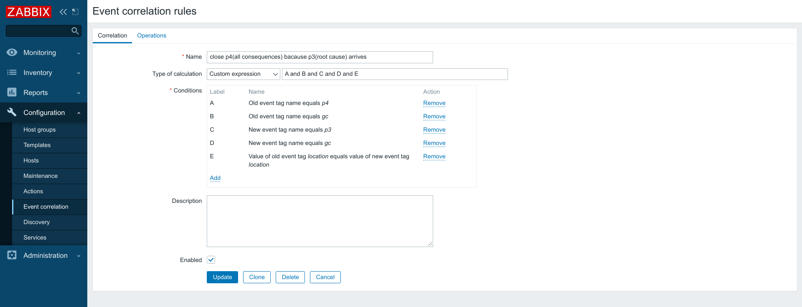

Make sure the operation is "Close new events":

Solution based on icmpping. Every device must be pingable.
All devices which belong to one site belongs to one host group, for example 'Location/Site1' (screenshot):
Alter "Unavailable by ICMP ping" trigger and install trigger tag 'gc' (it means "Global Correlation"):
Install 'location' tag with a value with match the site name. The value does not matter. But all devices from one site must belong to same value:
Now we have 2 sites which have devices:
Most likely we have host groups already which indicates a priority of devices:
Router is priority 1 (we will use tag 'p1'):
Core switch is priority 2 (we will use tag 'p2'):
Switch is priority 3 (we will use tag 'p3'):
ESX is priority 4 (we will use tag 'p4'):
Now we have 2 sites with installed priority. The count of devices does not matter. We can have multiple devices with a same priority:
With 4 segments of network, we need to have 3 rules to close events if the root cause is known. Open "Configuration" => "Event correlation" and install:

Make sure the operation is "Close old events":
Also need another +3 rules to keep closing consequences if the root cause is already known:
Make sure the operation is "Close new events":
If 3 network segments, then 4 rules in total!
If 4 network segments, then 6 rules in total!
If 5 network segments, then 8 rules in total!
If 6 network segments, then 10 rules in total!
Make sure template is linked:
We can install an unreachable IP address for individual devices and see what will happen:

Result:
It's suggested to install a delay on the action so the root cause is established. If data collection performed every '1m' then install action to open ticket after '3m':
When we are using Zabbix Event correlation and a site goes down for multiple hours, it means that every minute it will be +2 inserts per each device which is not reachable. If we keep a location down for multiple hours and if these situations happen 10+ times per month then user experience will sacrifice. because there will be millions of records in database table 'events'. Zabbix frontend will be slow, and it will be hard to repair the speed.